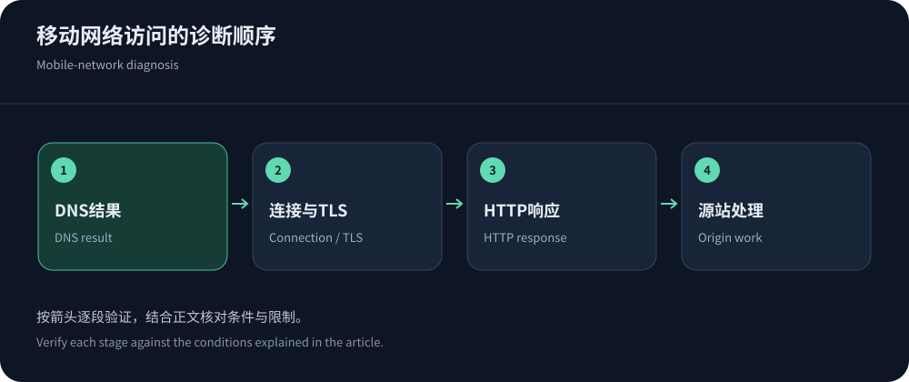
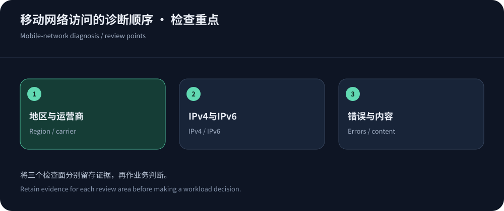

先明确：没有一种配置能解决所有移动网络异常
所谓高防CDN过移动墙，常被用来描述移动网络访问某个境外站点超时、重置或不稳定，但这个词没有统一技术定义。DNS结果不一致、IPv6路径异常、跨网拥塞、TLS证书问题、边缘策略误报与运营商处置，都可能产生相似症状。仅凭手机打不开，不能确定原因，更不能承诺换一个节点就永久解决。
正确顺序是先确认影响范围：只影响一个域名还是多个域名，只在移动还是全部运营商，只在某个省份或某段时间，浏览器与应用是否一致。记录时间、地区、接入方式、解析地址和请求阶段，保留可复查的失败。购买CDN5高防CDN等服务时，也应要求提供拟交付地址做实际验证，不接受无法限定条件的可达性承诺。
按失败阶段收集证据
尽量在同一时间用移动、电信、联通网络访问同一个HTTPS对象，并记录成功与失败，不只截图报错。浏览器网络面板、客户端日志和服务商请求日志各自提供不同视角；如果边缘根本没有收到请求，就不能只修改WAF。若仅某个业务路径异常，优先检查方法、大小、身份和缓存差异。
手机排查时还要区分蜂窝与Wi-Fi，双卡设备记录正在使用的SIM和数据网络，确认没有代理或私有DNS改变路径。同一设备切换网络后的结果才有对照意义；不同手机、不同浏览器和不同对象同时变化，会让结论难以复查。
| 表现 | 核查证据 | 下一步 |
|---|---|---|
| 没有地址或解析不同 | 比较递归解析器、A/AAAA、TTL及权威DNS记录，确认是否有旧地址。 | 修正错误记录与调度，等待缓存按TTL更新，不把更换公共DNS当所有问题的保证。 |
| IPv4正常而IPv6失败 | 分别记录地址族、连接时间及返回地址，核查AAAA指向与源站IPv6暴露。 | 修复IPv6服务与路由，若临时调整AAAA，应保留回退及兼容验证。 |
| TCP连接超时 | 比较目标地址、端口、运营商与时段，检查是否在边缘建立连接前失败。 | 交给供应商定位互联与路由；必要时协调运营商，不先增加应用缓存。 |
| TLS阶段失败或重置 | 记录SNI、证书链、主机名和握手错误，重置本身不能证明某一种拦截。 | 修复证书和端点配置，核查网络处置；不要关闭证书验证当长期方案。 |
| 返回403、429或挑战 | 查询请求ID、规则动作、客户端身份和应用兼容性，确认正常用户是否误伤。 | 缩小规则范围，按业务身份调整限额，保留保护与可审计例外。 |
| 502、504或首字节很慢 | 关联边缘回源日志、源站连接和应用计算，区分缓存命中与动态请求。 | 检查回源TLS、Host、名单、超时和应用负载，不把错误全部归到移动网络。 |
| UDP或HTTP/3异常 | 检查终端支持、UDP路径与HTTP版本回退，记录是否有重复握手和延迟。 | 确保HTTP/2等兼容路径正常，再评估是否启用新的协议策略。 |


DNS调度与IPv6要分别验证
不同递归解析器可能让调度看到不同的网络位置，返回地址也可能不同。先核对权威记录是否正确，再比较运营商解析结果；CDN的智能调度仍可能受缓存和解析链路影响。一次从公共解析器获得的可用地址，不能证明全部移动用户都会获得同样结果。临时改DNS时，保留旧记录和TTL，给供应商提供新旧地址的时间线。
IPv4与IPv6不是同一条路径的两种写法。终端可能优先尝试IPv6，AAAA错误或链路不可用就可能影响体验，即使IPv4单独测试正常。应确认边缘IPv6服务、证书和策略完整，源站限制也要覆盖两个地址族。关闭IPv6可能短期改变症状，却不能替代查明故障；是否临时撤回AAAA应根据服务证据和影响范围决定。
连接、TLS与QUIC：不要把所有重置都叫拦截
TCP连不上，和TCP已建立但TLS失败，定位方向不同。后者需要核查主机名、SNI、证书链和边缘配置；连接重置也可能来自服务端、代理、中间网络或资源限制，单次现象无法证明具体责任方。遵循HTTP语义理解客户端结果，记录实际错误，而不是用一个笼统的网络异常覆盖所有阶段。
QUIC使用UDP，HTTP/3基于它运行，网络兼容性和回退行为会影响连接。如果启用新协议后仅部分客户端异常，比较协议、握手与回退，不要仅反复切节点。路径MTU、丢包和重传也可能影响大响应；小页面正常、大下载卡住时，要保留对象大小和完成阶段的证据。
边缘策略和回源故障，可能伪装成线路问题
移动用户经常共享出口地址，过严的单IP频率限制可能误伤正常用户。403、429和挑战页面应关联边缘规则ID，检查路径、方法、会话与客户端能力。API或SDK不能完成浏览器验证时，应改用适合业务的鉴权、配额和行为规则，而不是关闭所有安全策略。搜索爬虫与第三方回调也要分别验证。
502与504往往需要查看回源连接、Host、TLS和源站处理，而不是简单换移动优化节点。新节点的回源地址若没加入源站名单，也会出现部分地区失败。查看错误是否被缓存、失败是否集中在动态接口。对照香港回源优化修复真正的瓶颈，保留变更版本便于恢复。


恢复访问：采用可验证的修复与服务路径
确认是线路问题后，向CDN和运营商提交时间、地区、目标地址、协议与阶段信息，要求定位及替代可用线路。如果原因涉及服务或网络管理处置，应通过对应支持和合规流程解决，技术更换不等于获得永久可达承诺。香港和其他境外节点通常不适用大陆节点的相同接入条件，但这不消除当地法规、内容与经营义务；Cloudflare中国网络条件也显示大陆服务有独立要求。
替代节点、备用平台和DNS回退都需预先验证证书、规则和源站隔离，不能临时切到裸源站暴露防护入口。恢复后持续观察移动与其他运营商的成功率、P95及业务完成情况，再决定长期方案。需要换服务商时，阅读高防采购指南把可达性验证写进验收；不要把一次恢复访问包装成解决所有所谓移动墙的能力。